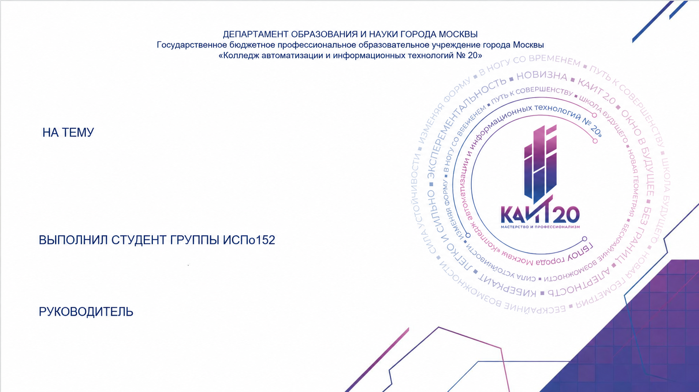
Актуальность
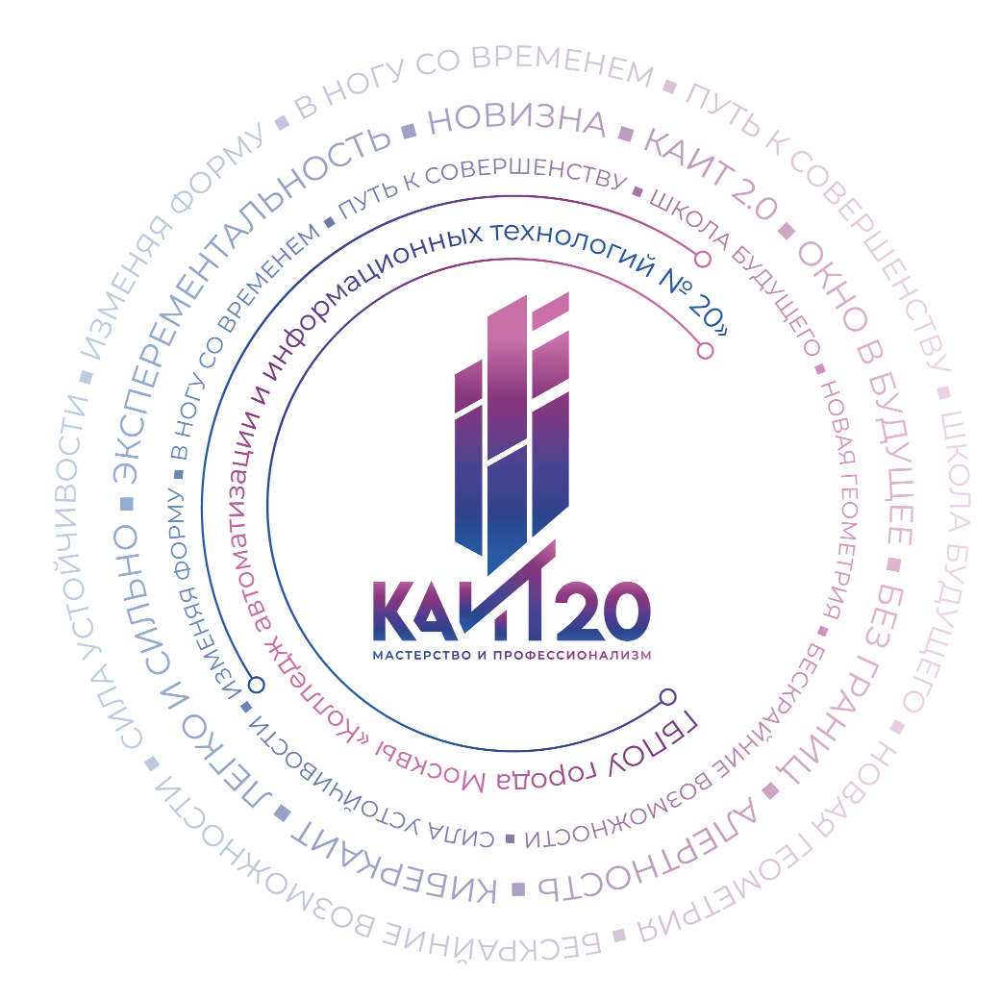
Среднестатистический пользователь проводит более 6 часов в сутки в браузере, не контролируя структуру этого времени:
- отсутствие контроля над тем, сколько времени уходит на соцсети, развлечения и учёбу;
- проблема особенно остра для школьников и студентов, отвлекающихся на развлекательный контент;
- потребность в инструменте, ведущем учёт времени в фоне и визуализирующем статистику;
- необходимость скорректировать собственное цифровое поведение осознанно.
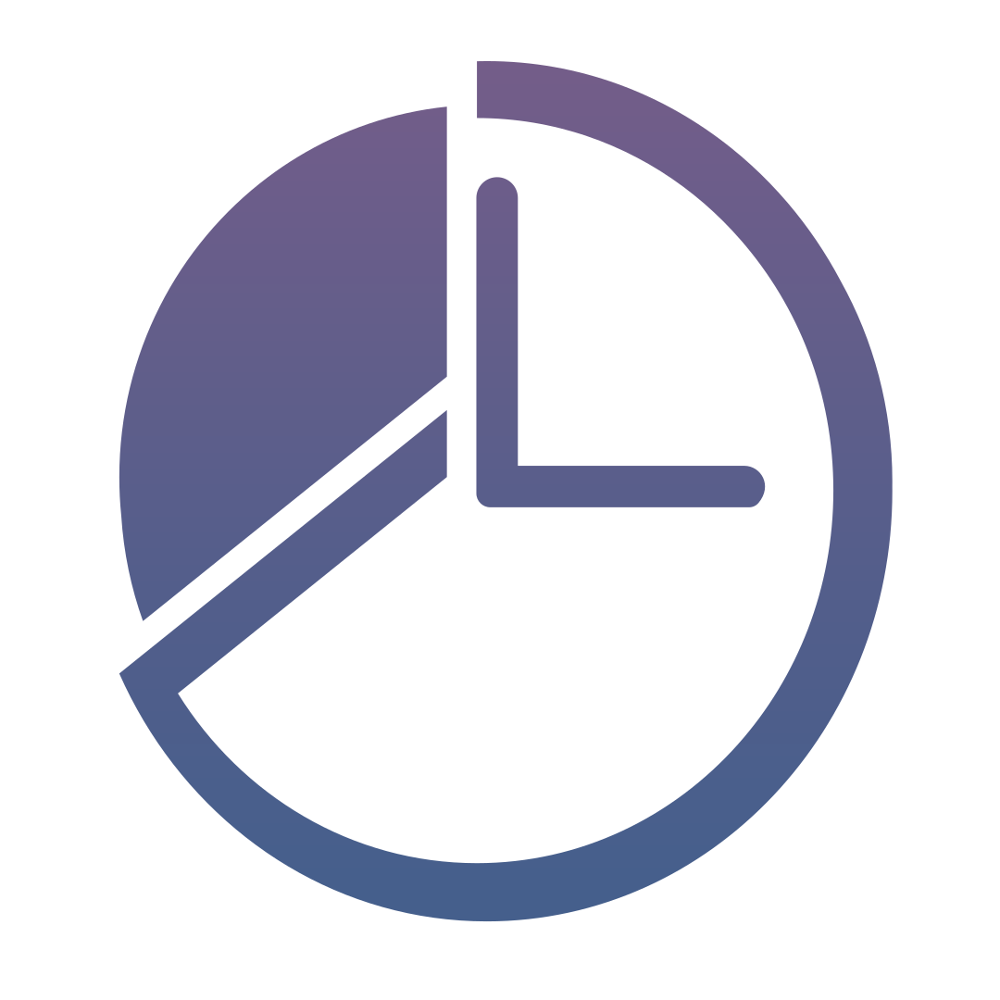
KAITimer · Индивидуальный проектЦель проекта
Разработать и опубликовать браузерное расширение, обеспечивающее автоматическое отслеживание и наглядный анализ времени, проводимого пользователем на различных веб-сайтах.< p>
Объект
Браузерное расширение как программный продукт для Google Chrome и Mozilla Firefox.
Предмет
Программные методы и технологии: JavaScript, Web Extensions API, Chrome Storage API.
Период
31.12.2025 — 10.03.2026. Теоретическая база — документация MDN и Chrome Developers.
Задачи проекта
Архитектура браузерного расширения
chrome.tabschrome.storagechrome.windowschrome.alarmschrome.idle
Архитектура браузерного расширения (взаимодействие через Message Passing API)
Технологии разработки

HTML
Структура интерфейса popup-окна и страницы настроек.

CSS
Custom properties, flexbox-разметка, анимации прогресс-баров.

JavaScript
Вся логика расширения. ES2020+, async/await.
WebExtensions API
Кроссбраузерная спецификация: Chrome, Firefox, Edge, Opera.
chrome.tabs — вкладки и URLchrome.storage.local — статистикаchrome.windows — фокус, idlechrome.alarms — запись
Методы сбора и анализа данных
Временны́е метки фиксируют начало визита; Idle Detection API приостанавливает таймер при простое > 60 сек; данные агрегируются по домену второго уровня. Инструмент должен корректно обрабатывать два типа поведения:
| Критерий | Сёрфер | Геймер |
|---|---|---|
| Время в браузере / сутки | 5–8 часов | 2–4 часа |
| Характер активности | Короткие сессии, частые переключения | Длительные сессии на 1–2 доменах |
| Доменов в день | 20–50 и более | 3–10 |
| Доля простоя (idle) | Низкая | Высокая — фоновое окно во время игры |
Таблица 1 — Сравнение поведения пользователей типов «сёрфер» и «геймер»
Анализ существующих решений
| Критерий | White Rabbit | Wasted Time | Tab Time Tracker | 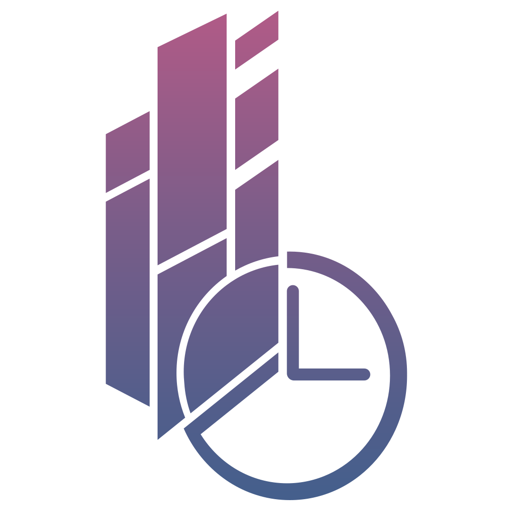 KAITimer |
|---|---|---|---|---|
| Стоимость | Бесплатно | Бесплатно | Бесплатно | Бесплатно |
| Выборочное отслеживание | Нет | Да | Нет | Да |
| Визуализация статистики | Нет | Нет | Нет | Круговая диаграмма |
| Кастомизация UI | Нет | Нет | Только смена темы | Тема + язык |
| Открытый код | Нет | Нет | Нет | Да |
| Браузеры | Chromium | Chromium | Chromium | Chromium + Firefox |
Таблица 2 — Краткое сравнение существующих решений для отслеживания времени в браузере
Аналог 1 — White Rabbit: Tab Timer
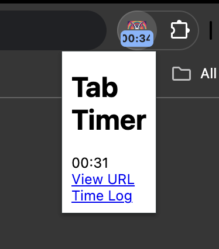
Бесплатное расширение для измерения времени, проведённого на отдельных вкладках. Интерфейс крайне простой: компактное всплывающее окно показывает лишь название, таймер текущей вкладки и две ссылки — View URL и Time Log.
Недостатки
- нет графической визуализации статистики;
- отсутствует функция лимитов времени;
- ограниченные возможности кастомизации интерфейса.
Аналог 2 — Wasted Time Tracker
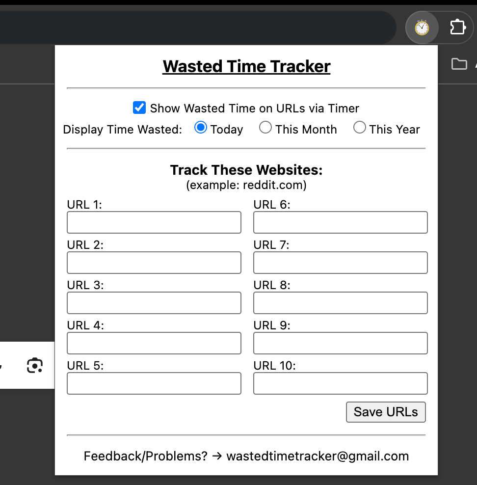
Отслеживает время на заранее заданных сайтах: пользователь вручную вписывает до десяти URL, а счётчик потраченного времени отображается прямо во всплывающем окне.
Недостатки
- крайне ограниченная аналитика;
- отсутствует полноценная визуализация данных;
- устаревший, практически неоформленный интерфейс.
Аналог 3 — Tab Time Tracker
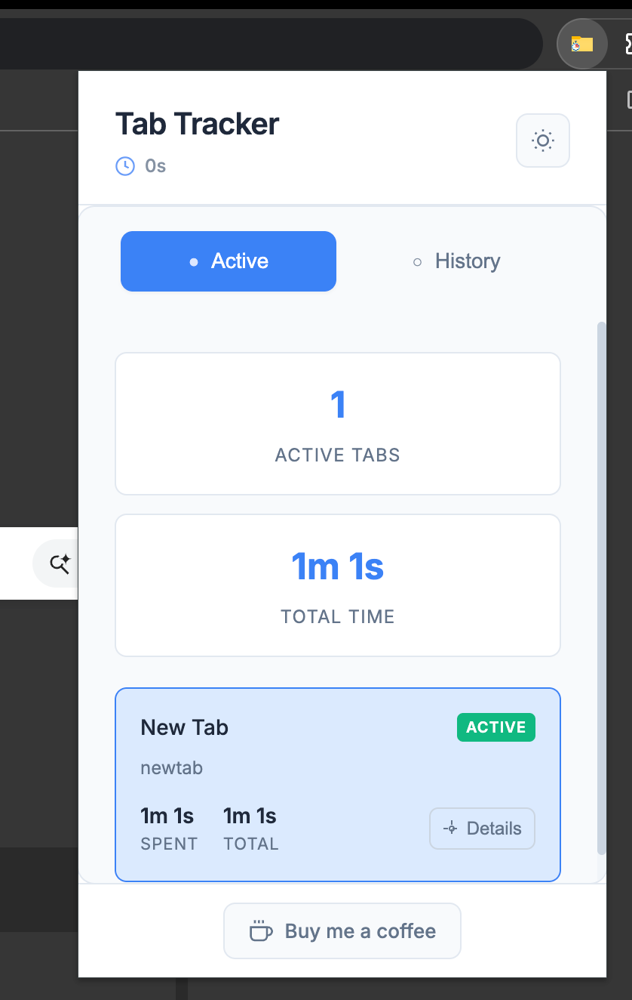
Ведёт учёт времени по вкладкам и URL-адресам, разделяя активные вкладки и историю. Есть базовая смена темы оформления.
Недостатки
- нельзя вручную задать список отслеживаемых сайтов;
- нет полноценной визуализации статистики;
- неудобный для оперативного анализа дизайн.
Название и логотип
Название образовано приёмом телескопии — слиянием аббревиатуры КАИТ (Колледж Автоматизации и Информационных Технологий) и слова Timer. Общая буква «T» на стыке сливается в одну.
- лаконичность — одно слово для иконки и магазина;
- смысл: функция (Timer) + происхождение (КАИТ);
- уникальность — нет аналогов в Chrome Web Store;
- цветовая гамма повторяет фирменный градиент колледжа.
Основной логотип расширения KAITimer (разработан в Figma)
Проектирование архитектуры KAITimer
Разделение ответственности
Каждый компонент выполняет строго определённую функцию — поддерживаемость и тестируемость кода.
Жизненный цикл
Service worker подписан на onActivated, onUpdated, onFocusChanged и ежесекундно обновляет счётчики.
Хранилище — JSON по домену
{ time, tracking, countInBackground, icon } + настройки темы и языка в chrome.storage.local.
Схема компонентов и страниц расширения KAITimer
Пользовательский интерфейс
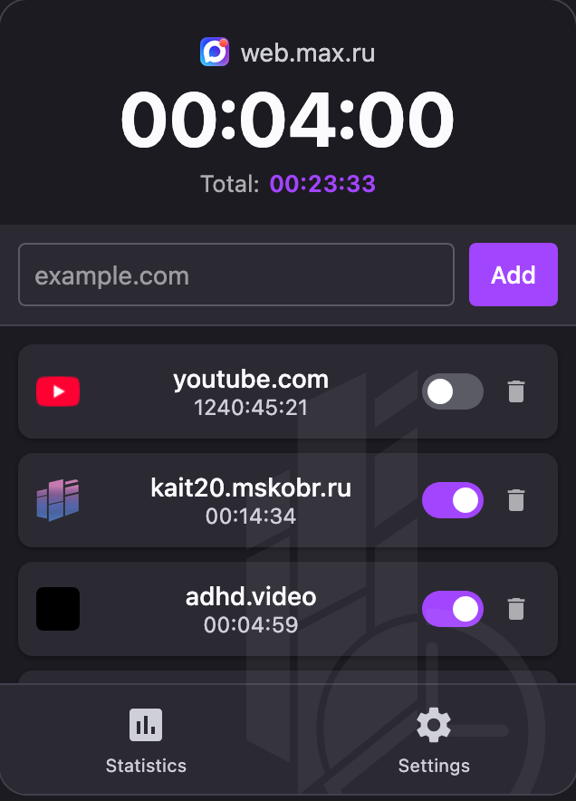
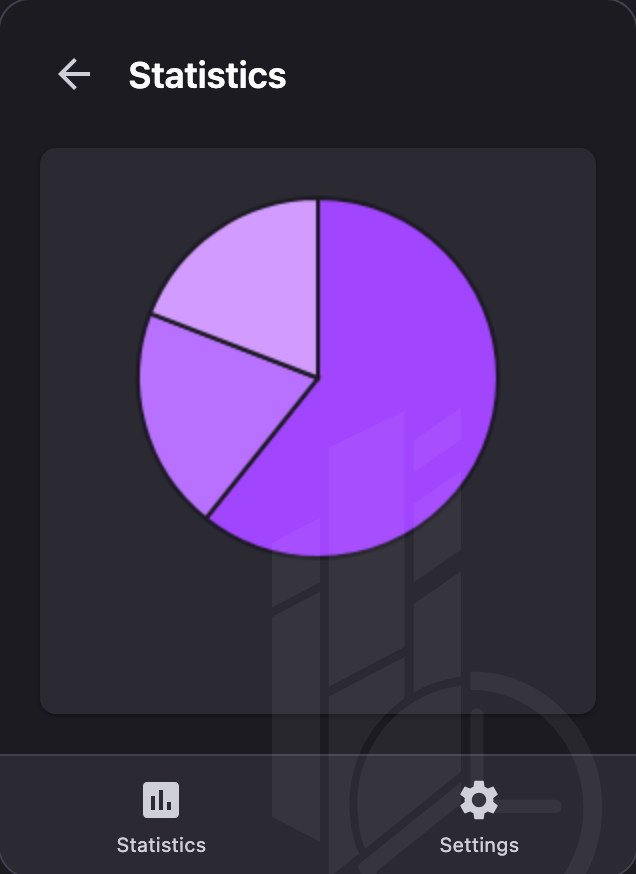
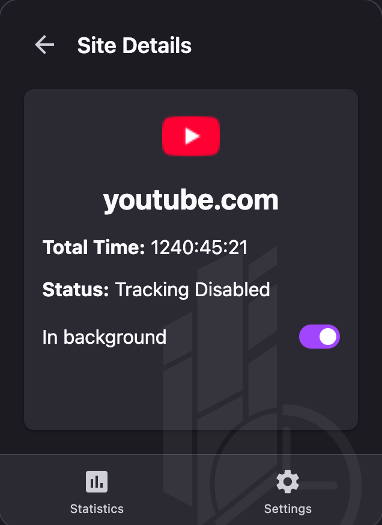
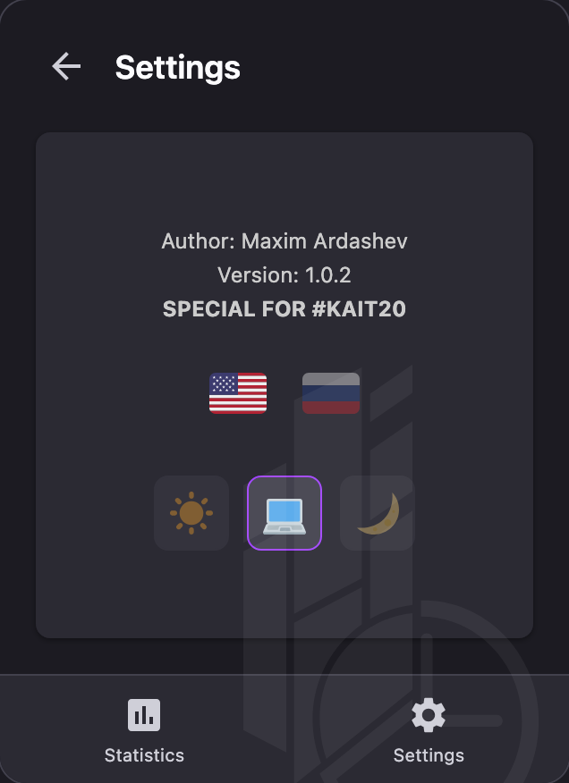
Экраны интерфейса расширения KAITimer (минимализм, акцентный фиолетовый, светлая/тёмная темы)
Тестирование и оценка результатов
Функциональное тестирование
Быстрое переключение вкладок, несколько окон, режим сна и пробуждение, работа с профилями. Критические ошибки устранены.
Пользовательское тестирование
5 добровольцев — студентов КАИТ №20 — в течение двух дней. Подтверждена практическая ценность продукта.
Публикация и отзывы пользователей
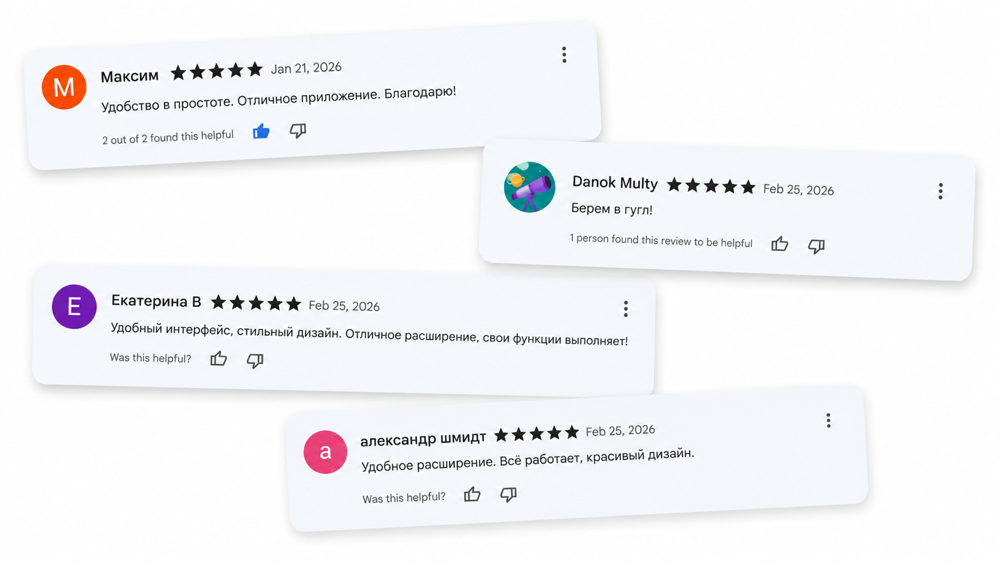
Расширение опубликовано в Chrome Web Store и Firefox Add-ons, прошло автоматическую и ручную модерацию на обеих платформах.
Отзывы пользователей расширения KAITimer в магазинах
Оформление страниц в магазинах
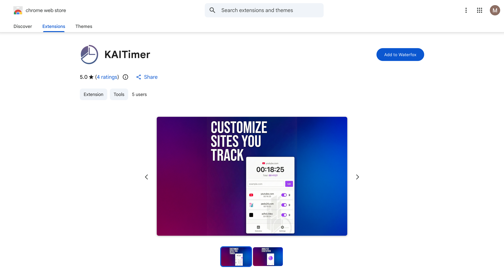
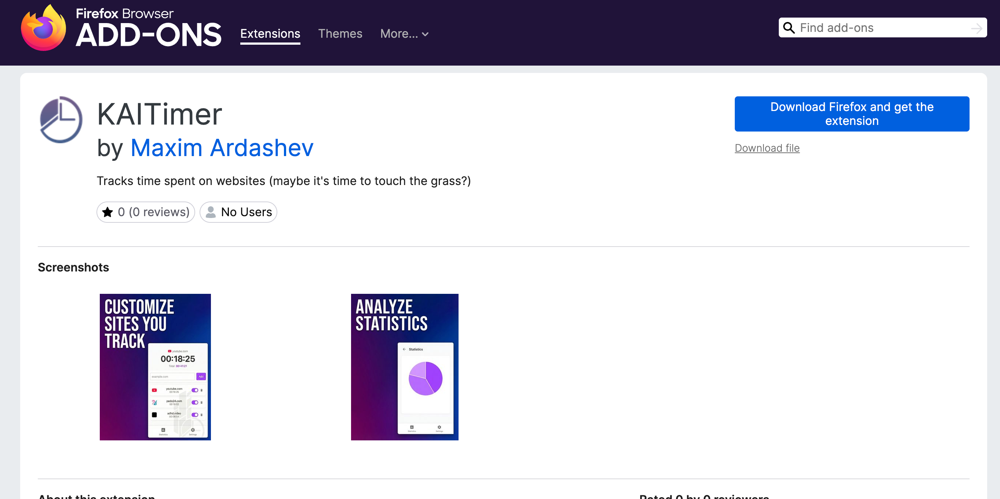
Страницы KAITimer в Chrome Web Store и Firefox Add-ons (промо-баннеры «Customize sites you track» и «Analyze statistics»)
Заключение
Поставленная цель достигнута: расширение KAITimer спроектировано, реализовано и доведено до публичного релиза. Обеспечено:
Перспективы: экспорт статистики в CSV, синхронизация между устройствами, публикация в Microsoft Edge Add-ons и Opera Add-ons.
Информационные источники
- Mozilla Developer Network — официальная документация Web Extensions API;
- Chrome Developers — Manifest V3, chrome.tabs / storage / alarms / windows / idle;
- White Rabbit, Wasted Time Tracker, Tab Time Tracker — страницы в Chrome Web Store;
- HTML Canvas 2D Context (W3C) и ECMAScript Language Specification (Ecma International);
- ГОСТ 7.0.5–2008 и ГОСТ 7.1–2003 — правила оформления библиографических ссылок.
СПАСИБО ЗА ВНИМАНИЕ!
Ардашев Максим Сергеевич · группа ИСПо152 · КАИТ №20 · 2026